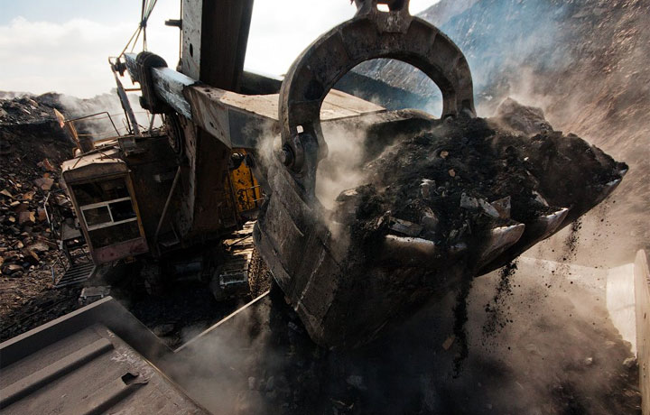

За повідомленням “Наші Гроші”, ДП «Луганськвугілля» 21 березня 2014 року за результатами тендерів уклало низку угод постачання устаткування та його ремонт загальною вартістю 95,11 млн гривень. Замовлено устаткування електричне, для гірничих робіт, для робіт у кар’єрі та для будівництва, машини й устаткування загального призначення, а також ремонт і техобслуговування машин і устаткування спеціального призначення. З цієї суми більшу частину – 81,83 млн грн. – отримає ТОВ «Iндекспром» з групи компаній голови парламентської фракції Партії регіонів Олександра Єфремова. Офіційними власниками «Iндекспром» є Наталія Єфремова та Ірина Лещенко.
Конкурентами «Індекспрому» по різних лотах були ТОВ «Портекс», ПП «Консент» і ТОВ «ТД «Краснолуцький машинобудівний завод». Усі три компанії зареєстровані на болгарина Христо Колева, який представляє бізнес-групу того ж Єфремова. Сама фірма «Консент»Колева також отримала цього разу підряд на 4,06 млн грн., з єдиним конкурентом по лоту в особі «Індекспрому». Решту 9,22 млн грн. освоїть ТОВ «НВП «Сілард». Власником компанії записаний Ігор Чернушенко з м. Миронівки Київської області. До того власниками були Едуард Бакай, Олександр Тарновський, Ірина Сафонова та Анна Чигрин. Еуард Бакай 2009-2011 рр. очолював ДП «Науково-технологічний комплекс «Ресурс» Мінпромполітики. Також Бакай і Тарновський є партнерами Марії Пинзеник, дружини Віктора Пинзеника нардепа від партії «УДАР», по ТОВ «Виробничий центр прикладних досліджень «Софія».
Єдиним конкурентом «Сіларду» на торгах було луганське ТОВ «ДС-8», співвласником якого є Ігор Єфремов, син Олександра Єфремова
За даними «ВДЗ», загальні тендерні здобутки фірм з угрупування Єфремова становлять 6,01 млрд грн. Всі підряди ці фірми отримали від вугледобувних підприємств Луганської і Донецької областей.
Нагадаємо, після зникнення Віктора Януковича 22 лютого Олександр Єфремов оголосив про перехід Партії регіонів в опозицію, засудив «втечу і легкодухість Януковича» і заявив, що партія була «заручником однієї корумпованої Сім’ї».
Фінансова група
Станом на січень 2014 року бізнес інтереси Олександра Єфремова зосереджені навколо компаній, які можна сортувати на дві групи:
- «фінансової», яка здійснює управління активами та контролюється холдинговою компанією TBM Holdings, Inc, зареєстрованою в штаті Невада, США
- промислової», яка виграє мільярди гривень на державних закупівлях, постачаючи державним підприєствам Луганщини різні товари та послуги
Конкурентами «Індекспрому» по різних лотах були ТОВ «Портекс», ПП «Консент» і ТОВ «ТД «Краснолуцький машинобудівний завод». Усі три компанії зареєстровані на болгарина Христо Колева, який представляє бізнес-групу того ж Єфремова. Сама фірма «Консент»Колева також отримала цього разу підряд на 4,06 млн грн., з єдиним конкурентом по лоту в особі «Індекспрому».
Разом з народним депутатом Лесею Оробець ми
- оскаржили цю закупівлю Луганському обласному територіальному відділенню АМКУ Захарову С.Ю., який у листі від 16.04.2014 р. повідомив, що у зверненні відсутня інформація та не додано підтвердні матеріали, які б свідчили про наявність правопорушення.
- оскаржили цю закупівлю в.о. Генеральному прокурору України Махніцькому О.І.. Заступник Генерального прокурора України Банчук М. повідомив у листі від 14.04.2014 р., що звернення надіслано до Головного слідчого управління МВС України для перевірки викладених доводів слідчим шляхом у межах кримінального провадження, що проводиться цим органом.
- оскаржили цю закупівлю в.о. Голови Державної фінанасової інспекції України Костюшку В.В.. Голова Гордієнко М.Г. у листі від 16.04.2014 р. зазначив, що Держфінінспекція України доручила Держфінінспекції в Луганській області перевірити в межах компетенції факти, викладені у зверненні, та вжити відповідних заходів.
Голова контролюючого органу листом 05.05.2014 року повідомив, що договори загальною вартістю 95,11 млн. гривень розірвані за взаємною згодою сторін
Оплата та поставки матеріальних цінностей не проводились. Ми впевненні, що замовник домовшись із учасниками хоче уникнути від відповідальності.